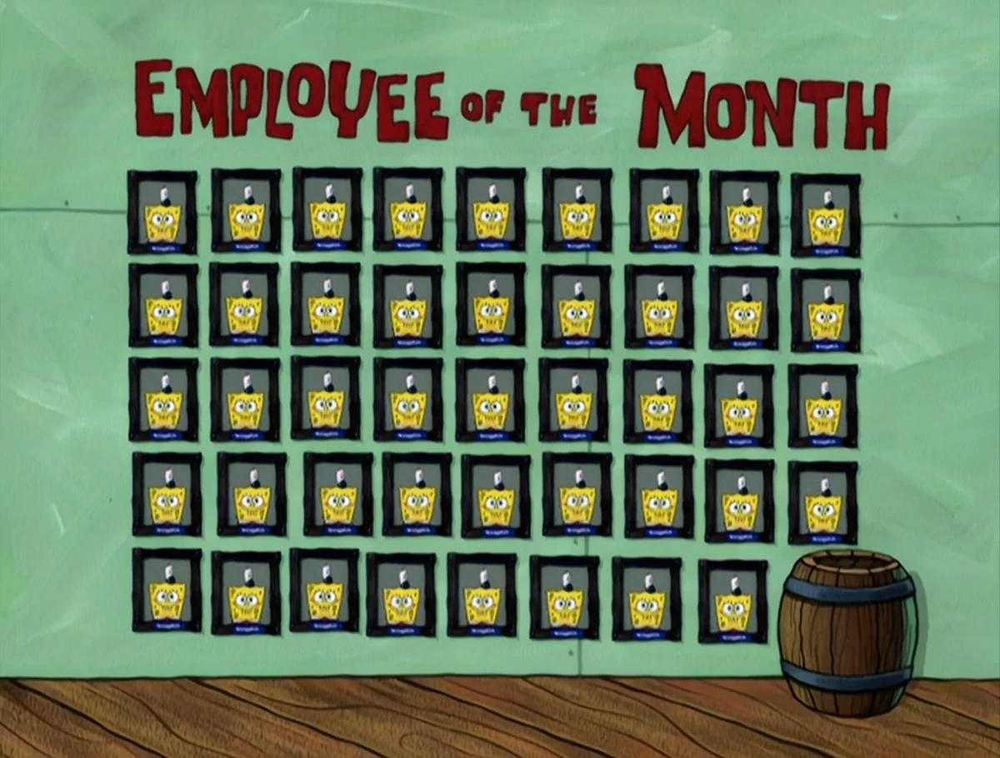

Career/Accomplishments
SpongeBob’s career as a fry cook at the Krusty Krab is one of his greatest accomplishments. He takes pride in his work, often going above and beyond to make the perfect Krabby Patty. Throughout his career, SpongeBob has faced many challenges, including rivalries with Plankton, who constantly tries to steal the Krabby Patty secret formula. Despite these obstacles, SpongeBob’s dedication to his job has earned him the respect of his boss, Mr. Krabs, and the admiration of his friends. SpongeBob has also become a symbol of perseverance and passion, inspiring countless fans with his love for what he does.
SpongeBob with many employee of the month awards.
- Works as a fry cook at the Krusty Krab.
- Faces off against the villainous Plankton.
- Known for his dedication and love for cooking.
- Has earned respect from his boss, Mr. Krabs.
- Inspires fans with his work ethic and passion.